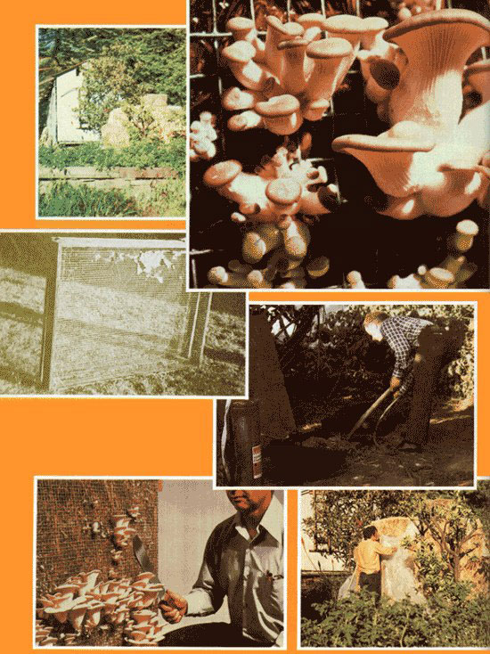

John Boeschen tells how-with an investment of $100 or less-to...
How do you like your mushrooms served? Perhaps mixed in with a green salad and vegetables? Or how about panfried, then sprinkled over a favorite hot dish? If you're like me, the mere mention of the delicious one-legged edibles-prepared in just about any way imaginable-starts your taste buds to cravin' a fungi feast!
Unfortunately, such a meal used to put a serious dent in my budget . . . until I encountered Dr. Ralph H. Kurtzman, Jr.biochemist and plant pathologist with the Department of Agriculture's Western Regional Laboratory-and his amazing mushroom farm (see Profiles in MOTHER NO. 54, page 68). This scientist's operation is especially impressive because-although there're lots of big businesses that spend thousands of dollars to get those tasty little fungi on your kitchen table-Ralph grows 'em in his urban Berkeley, California back yard . . . with a setup that cost him less than $100!
You see, Dr. Kurtzman's entire venture-including both his "mushroom house" and his growing medium-is based on the use of recycled materials. And the oyster mushroom (Pleurotus ostreatus) that Kurtzman cultivates doesn't even require a messy manure compost: Plain of rice or wheat straw provides all the nutrients that this particular species needs.
Admittedly, mushrooms demand a special environment, and an outdoor climate will not support most varieties for more than a few weeks each year. The hardy oyster type is an exception, however, that can generally be found on the forest floor from May to October. And with a suitable enclosure, you can extend even this long growing season to a full 12 months!
Caves, abandoned mines, or root cellars often have the desired temperature and humidity for mushroom cultivation (although such places may require additional ventilation). Unfortunately, these ideal mushroom "dens" just aren't available to most folks. To overcome this scarcity, a variety of man-made structures are used for mushroom propagation, and-though Ralph put his together from scratch-you can easily adapt the following concepts to most readymade sheds.
As they grow, mushrooms give off carbon dioxide ... a gas which-in an enclosed spacecan cause the fungi to become enlongated, stringy, and tasteless. Therefore, to assure adequate ventilation, our plant pathologist set his structure up on a raised foundation of railroad ties . . . and installed a stovepipe that circulates air from the foundation to the ceiling.
The building's 8' X 12' frame was built from recycled 2 X 4's, which can be purchased from a lumberyard that deals in used wood (or you can often get permission to simply haul such timber away from some nearby house-demolition site).
The frame was covered with one layer of 4-mil polyethylene-to protect the building from moisture and dry rot-followed by an exterior of 1/8"-thick low-grade masonite .. . which Dr. Kurtzman sealed with paint. The structure's interior was insulated with 3-1/2" of glass wool and, finally, that weatherproofing was covered with another protective layer of plastic.
And that's it! The biochemist's building is nothing fancy or costly ... simply a cozy home for mushrooms that could be put together by just about anyone. However, our expert does pass on one word of caution: Both the fungi and their grain-derived growing medium are very attractive to mice, so be sure to build well enough to keep such pests out. (Ralph says he learned about this structural requirement the hard way!)
Oyster mushrooms will survive temperature ranges from just above freezing to 75°F, but you should keep in mind that the fungi grow more slowly over long periods of time at lower temperatures . . . and produce abundantly for shorter durations at higher ones. (Remember, too-before you try to force your crop into fast production-that higher temperatures encourage pests and diseases.) The P. ostreatus species, in particular, prefers a range from 50 to 68 degrees . . . and 65 degrees seems to be just about ideal.
How much you'll have to heat your own mushroom house will depend, of course, upon the climatic conditions in your region. Ralph's structure is kept warm by the sun, which beats down on a south-facing wall. However, a gas or electric space heater (either one can probably be found at a garage sale or flea market) works well when the sunshine's not available.
In addition to warmth, mushrooms also need moisture to flourish. In fact, oyster mushrooms require a humidity of about 85%. The Berkeley mycologist bought an old army blower and evaporative cooler pad from a local surplus store to dampen his unit. Ralph's setup certainly does the trick, but there are less expensive alternatives. You could, for example, keep several pans of water near your heating source . . . and supplement this evaporated moisture by lightly spraying the inside of the house with a fine-mist nozzle once or twice every day.
In warmer areas of the country-where temperatures in such an insulated "garden" might rise above 75 degrees-you should consider a swamp cooler .. . but don't look for this piece of equipment in your neighborhood hardware store, because the best ones are homemade: Water drips through a small hole in the bottom of a five-gallon (or larger) can, and-as the liquid passes through a filter made of glass wool or an empty burlap sack and then evaporatesthe air around it is both cooled and humidified. (For a beefed-up version, simply trickle hosed water into an old automobile radiator . . . and then blow air through the fins with a fan.)
Oyster mushrooms, as I mentioned above, are natural inhabitants of the forest floor. You can find them growing low on the trunks of various deciduous trees such as elm, maple, willow, or poplar. The light that filters through the surrounding woods is normally very dim and bluish in color, and the best way to approximate this environmental condition is to limit the sunlight's access to a small, northfacing window. (Just remember that windows let heat in on warm days, and warmth out on cold ones!)
When natural light isn't available, fluorescent lamps will do. The ideal arrangement-to illuminate an 8' X 8' space-is one 40-watt, blue advertising tube. Two cool-white bulbs are the next best solution.
After you've duplicated the climate of the mushrooms' natural habitat, you'll have to give them something to grow on. Ralph uses rice straw, but he says that wheat straw works just as well. (For some unknown reason, barley straw doesn't promote oyster mushroom growth at all!) If you live in a rural area, such material (which farmers often burn) can probably be had for the asking.
City dwellers, on the other hand, will have to buy bales from a local distributor and mix the straw with up to 50% of its weight in scrap paper. Generally, because of a high concentration of clay fillers, magazine paper can't be recycled . . . but the material works fine as part of a mushroom substrate. As a matter of fact, scientists (including Dr. Kurtzman) have grown the oyster species on paper that contained high levels of lead and discovered that Pleurotus doesn't absorb the dangerous material! (Where there's little paper available, you can substitute sawdust-pound for pound-with the same results.)
You will, of course, need "trays" to enclose your growing medium. These should be no larger than 3' X 4', and are best constructed in two halves. Make one rectangular frame from 1" X 2" lumber, and another-of the same outer dimensions-from 1" X 4" material . . . then nail welded, galvanized fencing to the outside of each frame. (The mesh size is not critical, though Ralph finds a 2" X 2" wire net is the easiest to work with.) When clamped together with hinges and a latch and filled with straw, the units can be stacked vertically . . . which saves space and enables you to harvest mushrooms from each upright tray's screened sides.
Once you've built your trays and selected and blended your growing medium, you should "pasteurize" the straw with hot water. To simplify this chore, Kurtzman cut a 50-gallon drum in half to make two large wash tubs. The water in the tubs can be heated over a wood fire, but our expert saves some time and effort by using a commercial flame sprayer.
When the liquid reaches 180°F (you can check it with a meat thermometer), add enough substrate so that most of the water is absorbed by the mixture Let the ingredients bubble away in one tub for 15 minutes, then slosh them into the other tub with a pitchfork for another 15-minute scouring.
When you remove the soggy mass of growing medium from the second tub, there should be some runoff ... usually only a trickle from the bottom of each pitchforkful of straw. If too much water is left in the material, anaerobic fermentation may occur . . . and could wipe out any mushroom spawn you later introduce into the mixture.
Let the gooey mess cool in the growing trays until the internal temperature drops below 80°F. This natural cooling may take anywhere from 4 to 72 hours, because of the heat generated by fermentation. (If it's wintertime, you might let the trays cool off inside the mushroom house, to provide a little free warmth.)
When the mixture has cooled down, inoculate it with gray Pleurotus ostreatus spawn. For each 3' X 4' tray of substrate, you'll need four ounces of spawn, which you can order from the following distributors: The Kinoko Company, Dept. THEN, 8139 Capwell Drive, Oakland, California 94621 ($5.95 for one pound) . . . and Somycel U.S., Inc., Dept. TMEN, P.O. Box 476, Avondale, Pennsylvania 19311 ($4.75 for a four-quart bag).
Mix the spawn thoroughly with the growing medium ... but be sure to leave some spores on the top surface, just in case the internal temperature rises and destroys the more deeply "planted" mushrooms.
Ralph's "spawning room" is separated from the rest of the growing house by a wall, and has its own door to the outside. This chamber is not lit, but otherwise the spawning environment is the same as in the area where the fungi grow to maturity.
Rather than set an exact timetable for the spawn to run its way through the substrate, it's best to watch the spread of the mycelium on the surface. When your screened-in straw is covered with what appears to be a fine network of tiny, fuzzy threads, it's time to place the trays in the growing room.
Once your mushrooms are "up and growin' ", most of the heavy work is done ... and you can sit back and watch the tasty morsels take shape. The only additional care needed is a sprinkling of fine spray on the growing beds-once or twice daily-to keep the straw from drying out. Don't overdo the watering, however! You must make sure there's no moisture runoff or buildup at the bottom of the trays.
It's also important to keep the mushroom house as sanitary as possible, to prevent diseases and pests from ruining your crop ... and excess water creates ideal conditions for such problems. The idea is to keep the humidity high, but to limit actual standing water within the structure to the lowest possible level.
Sometimes "weed" mushrooms will appear shortly after the trays are placed in the growing room: Such "toadstools" are easily recognized by their long, spindly stalks and small caps. There's no need to remove them (but never eat the "wild" fungi!), because their presence doesn't affect the growth of the Pleurotus.
Your crop will be fully grown when the caps no longer curl down and under (size is not an indication of a mushroom's maturity), and the perfect pickin' time is just before the caps finish uncurling completely. To reap your harvest, simply slice off the toothsome tidbits at screen level with an ordinary kitchen knife. You can expect the trays to continue to produce for up to two weeks after the first harvest. Once a tray goes dormant, just empty the old substrate and start with a fresh batch.
The spent medium makes an excellent compost for the family garden. In addition, the straw-a product normally not used as cattle feed because it contains lignin (a complex chemical which must be broken down before the forage can provide any nutritional benefits for livestock)-is transformed by the mushrooms into wholesome fodder!
Dr. Kurtzman's mushroom house contains 380 square feet of vertical growing surface. At peak output, he can expect to harvest 300 pounds a month, 12 months a year! Obviously, this is more fungi than even the most avid mushroom gourmand could eat . . . but, with the price for oyster mushrooms running as high as $3.00 a pound, it could very well be worth your while to seek outside markets for your surplus. Check with local vegetable wholesalers, restaurants, health food stores, and consumer co-ops.
Oyster mushrooms can be stored up to two days without refrigeration, after which they're subject to spoilage. However, if you sun-dry the delicacies on screen or cheesecloth trays (or in an oven at 140°F) and store them in a dark, dry place, they'll keep indefinitely. Another nice feature of Pleurotus is that you can easily reconstitute the dried mushrooms in a bowl of cool water.
Besides adding a festive and mouthwatering touch to your meals and putting cash in your pockets, mushrooms have many hidden virtues. For example, edible fungi are good sources of protein, niacin, riboflavin, vitamin C, folic acid, calcium, phosphorus, and potassium. To top all that, mushrooms can be a dieter's best friend . . . they have about the same caloric value as an equivalent quantity of non-fattening apple!
And believe you me-monetary and health rewards aside-these marvelous homegrown mushrooms will be about the most delicious you've ever eaten . . . my taste buds will swear to it!
|
 TOP LEFT: The propagation shed is a simple 8' by 12' wooden structure, insulated against cold and made verminproof. TOP RIGHT: A bumper crop of the fragile fungi... plenty to eat, and lots left over to sell at $3.00 a pound! SECOND FROM TOP LEFT: This cage ""tames"" the wild mushroom. SECOND FROM TOP RIGHT: Stewing the rice straw helps pasteurize the substrate. ABOVE LEFT: It's harvest time! ABOVE RIGHT: Straw in storage for future mushroom crops |
|
|